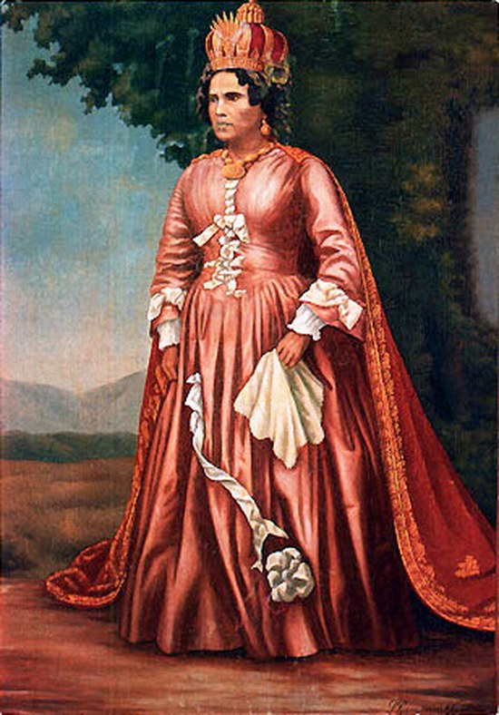

THE CLOSED DOOR
Her technique makes invasion unprofitable — supply lines rot, maps lie, landing parties lose their way — and the closed door of Madagascar is at once her vow, her throne, and her technique.

THE CLOSED DOOR
Her technique makes invasion unprofitable — supply lines rot, maps lie, landing parties lose their way — and the closed door of Madagascar is at once her vow, her throne, and her technique.
Feature map
Level-by-level features, as the figure refined them.
Rot the Line
Action · 2 CE · one Trespasser within 60 ft.
Tier IV · Tank / Controller (denial) · Suggested CE ability: CON · Primary verb: Refuse. Technique DC = 8 + proficiency bonus + CON modifier. Her hostile features target Trespassers — creatures she has Declared (see below). Declaring is not an attack; it is an edict. It Is Declared. As a bonus action (1 CE), Ranavalona Declares any number of creatures she can see within 120 ft as Trespassers for 1 hour. Trespassers treat all terrain within 60 ft of her as difficult terrain. A Declared creature may immediately kneel and declare itself a guest — the Declaration lifts, but it is counted (she learns its name, number, and business). A guest who breaks guest-law is Declared again, and the second Declaration cannot be declined.
The trespasser's supply rots: CON save vs her technique DC. On failure, until the end of her next turn: the target has disadvantage on attack rolls and its speed is halved. On success, only its speed is halved. (The army is not fought. The line is fought.)
The Shore Rejects
Passive.
Trespassers have disadvantage on saving throws against her technique features while standing on ground within 60 ft of her — the island testifies against them. Her allies within 60 ft of her cannot be moved against their will — the island holds its own.
The Maps Lie
Reaction · 3 CE.
When a Trespasser within 120 ft of her teleports or uses magical movement, she redirects the destination up to 60 ft to a point of her choice (WIS save vs her technique DC negates). The willing-decline: the traveler may abort the movement instead — arriving nowhere, safely (the action and any resources spent on the movement are still spent). (The chart showed the harbor. The harbor declined to be there.)
Landing Parties Lose Their Way
Action · 4 CE · 1 minute (concentration) · 60-ft aura.
Trespassers that start their turn in the aura must succeed on a WIS save vs her technique DC or become lost until the start of their next turn: they cannot take reactions, cannot take bonus actions, and attack rolls against them have advantage. A lost creature that uses its action to begin the march out — moving away from her and taking no hostile action — is spared the effect that turn. (The road was there this morning. The road is participating in the refusal.)
The Quarantine
Action · 6 CE · 1 minute.
A 60-ft-radius zone centered on her becomes quarantined: no Trespasser can enter the zone — any attempt to cross the boundary pushes the attempter back to the nearest unoccupied space outside it. Trespassers inside may leave freely — the door opens outward. It has never imprisoned anyone. It has only ever declined them. She may dismiss the zone early (no action).
The Edict of Spoilage
Action · 8 CE · once per short rest.
She speaks one edict, naming a kind of supply — powder, rations, medicine, fuel. For 1 minute, every Trespasser within 120 ft that relies on the named supply suffers its loss: disadvantage on CON saving throws and vulnerability to one damage type of her choice (chosen when she speaks the edict). A Trespasser may instead abandon the supply — dropping, discarding, or destroying all of the named kind it carries — and is spared. (The willing-decline: travel light, or not at all.)
Maximum, Domain, or equivalent.
Capstone material.
Maximum: MADAGASCAR UNVIOLATED
She becomes the island: she gains resistance to all damage, cannot be moved against her will, and any Trespasser that hits her with an attack takes 2d10 force damage (the island answers). Her Declaration range becomes 1 mile for the duration. (Thirty-three years, no landing. The record holds.)
THE UNINVADABLE ISLAND
The high city. The Rova on the hill. The edicts posted at every road. Inside this domain, the sure-hit is the campaign of attrition — at initiative 20, the island collects its toll: each Trespasser inside must succeed on a CON save vs her technique DC or gain 1 level of exhaustion (Heaven permits the defense; the sea permits the march out). A Trespasser that spent its turns marching out — moving toward the boundary, taking no hostile action — is spared at the count. (The willing-decline is the oldest one in warfare: leave.) Sure-hit (allies): allies inside cannot be moved against their will, have advantage on saving throws, and difficult terrain costs them nothing — the island carries its own.
- Clash points
- 800
- Burnout
- 5 rounds
- Duration
- 2 minutes
- Radius
- 60-ft radius
- Activation ✦
- full-turn action
- CE cost ✦
- 20
✦ Canon: figure Domains are Specific Domains — the stated profile governs, not the player point-unlock table.
THE ANCESTORS' SCHEDULE
When Ranavalona would be reduced to 0 HP, the turning of the bones answers: she is restored to half her maximum HP, every hostile creature within 60 ft is Declared as a Trespasser (the usual guest-decline applies), and until the end of her next turn her Rot the Line costs no CE. (The ancestors keep the schedule. The schedule keeps the queen.)
Build-defining options.
This technique grants Innate Technique Feats — hand-authored applications of the figure's art, available in the builder's feat picker when you select this technique.
Edge cases and shared systems.
Campaign canon notes